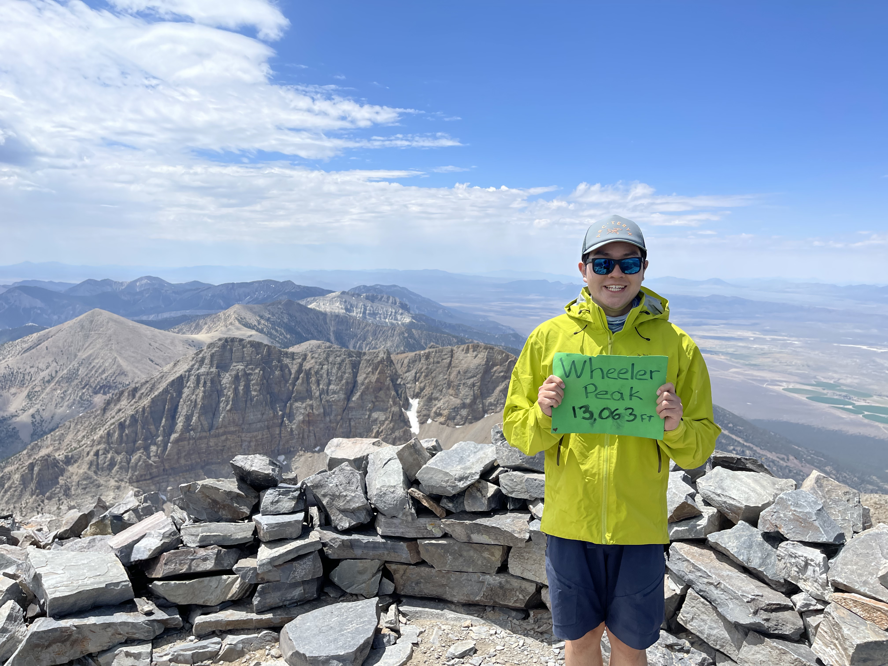
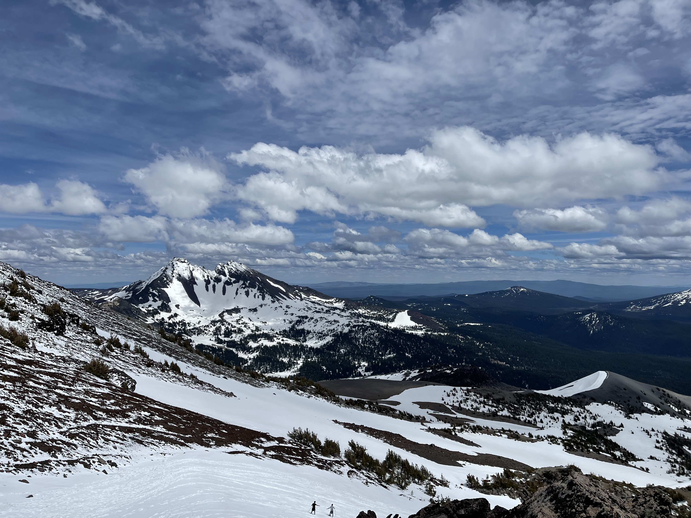
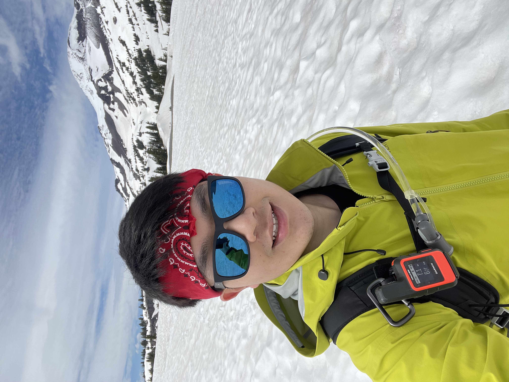

Bruce's Adventure Blogs
⛰️ ⛷️ 🚴🏼 🥾 🌲

Cascade Pass to Sahale Camp
North Cascades, Washington, August, 2025
This 12-mile round trip climbs 4,000 feet from Cascade Pass to Sahale Glacier Camp. The route winds through wildflower meadows and over rocky ridges, with amazing views of jagged peaks and turquoise alpine lakes along the way.

Park Butte Lookout
Mount Baker, Washington, August, 2025
This 7.5-mile hike gains about 2,200 feet through forest, meadows, and rocky slopes before reaching a historic fire lookout. At the top, the close-up views of Mount Baker make the climb completely worth it.

Hidden Lake
North Cascades, Washington, July, 2025
This 8-mile hike into the North Cascades climbs through wildflower meadows and over alpine granite to a historic fire lookout. From the top, there are incredible 360-degree views of jagged peaks and the deep-blue Hidden Lake below.

Hike to Camp Muir
Mt. Rainier, Washington, July, 2025
I hiked to Camp Muir, a base camp at 10,188 feet on Mount Rainier. The route gains more than 4,700 feet and passes glaciers, deep crevasses, and wide-open views above the clouds. It was a tough climb and one of my most memorable days in the Cascades.

Bike Sunrise Road
Mt. Rainier, Washington, June, 2025
I biked Sunrise Road in Mount Rainier National Park before it opened to cars for the season. With snowplow crews still clearing the upper road, cyclists and hikers had the alpine scenery almost entirely to themselves.

Ski Colorado
Breckenridge, Colorado, January, 2024
I spent a week skiing Vail, Breckenridge, and Keystone, chasing powder and exploring some of Colorado's best-known terrain.

Maroon Bells
Aspen, Colorado, August, 2023
I visited the Maroon Bells and spent some time exploring Aspen, surrounded by some of Colorado's most iconic mountain scenery.

Christmas 2022 Ski Trip
Salt Lake City, Utah, December, 2022
After moving back to Chicagoland, I headed to Salt Lake City for a Christmas ski trip filled with storms, deep snow, and a few unexpected adventures.

Bike Going-to-the-Sun Road
Glacier National Park, Montana, July 1, 2022
I biked Going-to-the-Sun Road in Glacier National Park while the upper section was still closed to cars. With snowplow crews working higher up, cyclists and hikers had a rare chance to enjoy this iconic road without traffic.
Ski Utah
Utah, March, 2022
I skied Snowbird, Alta, Deer Valley, Park City, and Powder Mountain, checking several destinations off my list from National Geographic's "100 Slopes of a Lifetime." I also tried snowcat skiing for the first time on Lightning Ridge.
Ski Montana
Bridger and Big Sky, Montana, 2022 Ski Season
My season as a ski bum in Bozeman included 69 ski days, more than 700 miles, and 629,000 vertical feet. I also skied my first double-black run at Bridger Bowl, a mountain that will always have a special place in my heart.

Bike Tour in Grand Teton National Park
Grand Teton National Park, Wyoming, August 14th, 2021
I biked 25 miles on the paved trail through Grand Teton National Park. The scenic route stretches all the way to Jackson and is a great way to take in the Tetons at a slower pace.

Summit the Second Highest Peak in Nevada
Great Basin National Park, Nevada, July 3rd, 2021
I reached the 13,065-foot summit of Wheeler Peak, the second-highest peak in Nevada and the highest mountain I had climbed at the time. The 8.6-mile trip took 5 hours and 56 minutes, with about 3,000 feet of elevation gain and some wild off-trail scrambling near the top.

Hiking and Summer Skiing on Mount Hood
Mount Hood, Oregon, June 22, 2021
I hiked toward Illumination Rock, camped overnight, and returned to Timberline Lodge for a day of summer skiing. Only two runs were open, and the snow got slushy by the afternoon, but skiing in June on Oregon's tallest mountain was an experience I will never forget.

Hike to the False Summit of South Sister
South Sister, Oregon, June 12, 2021
My first mountaineering-style adventure covered 9.8 miles and 3,453 feet of climbing through deep snow. I ran out of time before the true summit, but glissading back down with the Cascades spread out in front of me was easily the highlight of the day.

Uphill Pursuit
I discovered my love for outdoor adventures after moving to Eugene, Oregon. I enjoy all kinds of mountain-related activities, including skiing, mountaineering, hiking, and camping. There's nothing quite like the thrill of summiting a snow-capped peak or skiing down its pristine slopes. Many of my adventure ideas are inspired by my favorite sources of inspiration. YouTube Channel As the REI slogan says, "A life outdoors is a life well lived," my goal is to explore as many beautiful places as possible.
Bucket List
-
Ski Watchman Peak at Crater Lake
-
Summit Mt St. Helens
-
Summit Mt Shasta
-
Summit Mt Rainier
-
Rim to Rim to Rim traverse at Grand Canyon